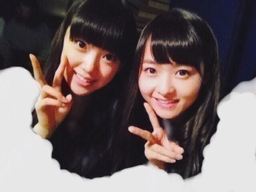
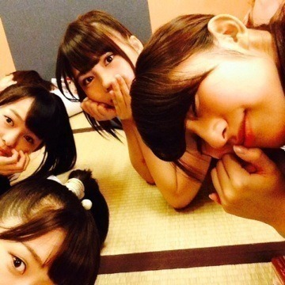
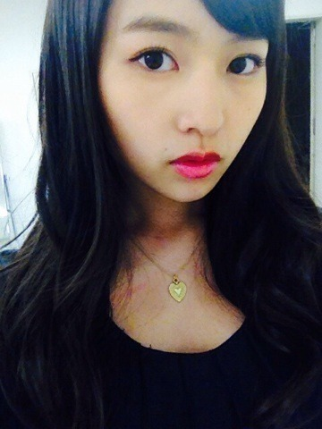
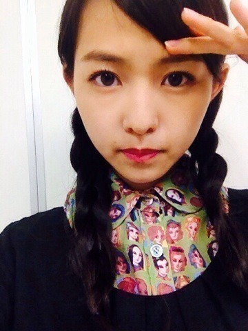
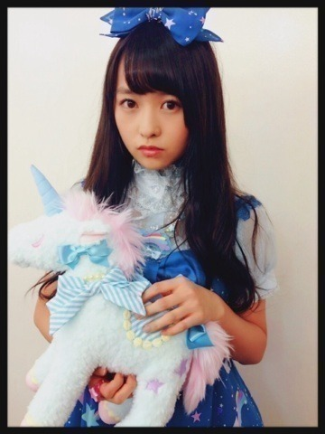
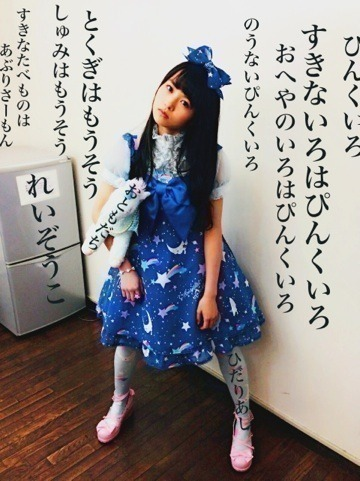
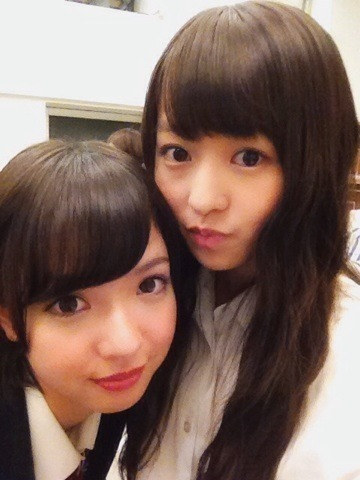
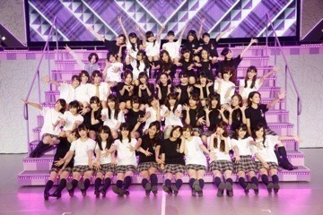
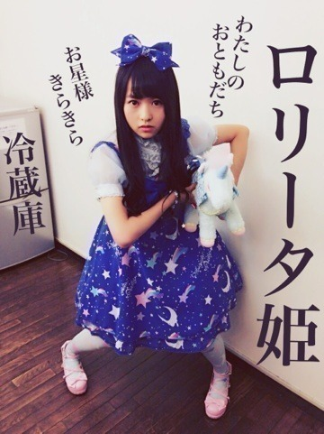
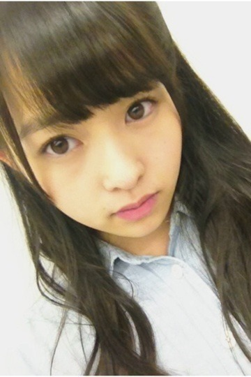

2013/1015Tue異色なおふたり。506 回目

みおなお誕生日おめでとう17歳！
写真は今日ですが衣装はひみつ！
さて、帰ろう！
と思ったら大雨...うわー
明日も激しい台風がくる。
みなさん気をつけてください。
昨日のはなし
絶命展に行ってきました！
なんか、ほんと、意味わかんないの。
全然意味わかんない。
でも、すごいすきだと思った。
全然説明できないけど
この作品はどういう意味なんだろう
って考える時間が楽しかった。
見て、何を思うか感じ取るかは
人それぞれ。
絶命Tシャツ、絶命缶バッジ
買っちゃったー
おほほ
前回のブログ、、
まだ完成してないんだよね...
送ったつもりなかったのに
公式見たら更新されてて
ファッッッ
ってなりました。
ぼけぼけです。
中途半端な内容ですみません
ガールズルール最後の個握
来てくださったみなさん
ありがとうございました！！
ガールズルールの期間、
いろんなことがあったなあ。
プリンシパルとか、
ドラマとかライブとか
いろんな感想きけたなー
長くお話をいっぱいできました。
みなさんの気持ちとか思いとか
すごく伝わりました。
やっぱりみなさんがいないと
だめだなーって感じます。
みなさんが私を支えてくださる分
もっと返したいです。
みなさんにも喜んでもらいたいし、
たくさんの方に私のこと知ってほしい。
自分なりに頑張るし、
応援しててほしい。
ありがとうございました！
次は7thの握手会
まりか川後まいまいれいか

畳は落ち着きますなあ
海の上の診療所1話
見ましたか？
見たとき不思議な感覚でした。
大学生になりきれてたのか...
いつか大きく出演できたらいいなあ
まりか
2013/1014Mon視線。505回目
今日は幕張メッセで
ガールズルール最後の個握でした。
服装は黒のワンピースでした！

1部まきまき
2部ゆるツイン
ワンピース nimes et nimes
ネックレス Lilou
ワンピは膝丈。
Lilouのアクセサリーだいすき

3部は顔だらけ三つ編み
シャツ Jocomomola
古着で買ったけど、
ここのブランドとってもかわいい！
今日だけ、前髪の分け目少し変えて
おでこ出してみました。
唇も真っ赤にしました。
ハロウィン近いというのを
前日に思い出して
雰囲気変えてみた。
むりやり魔女♪
まりか
2013/1012Sat水玉の腕の予定。504 回目
あああああ

童顔だからなんなんだ
叫びたい。
......
代々木ライブの感想
ありがとうございました！
お知らせ
10月14日放送のドラマ
『海の上の診療所』
1話に玲香といくちゃんと私が
女子大生役で出演します。
お話を聞いた時は
びっくりしたというか、
私でいいのかという...
でも、なにより嬉しくて、
そして緊張しました。
ぜひ見てください！
明日は握手会。
1部2部3部よろしくお願いします！

第二弾あぶりさーもん
からの質問回答
スクバってどんな感じに
デコってるのー？
▶︎デコ...？
紫のアメーバみたいな
ストラップひとつです。
苔好きなのは知ってるけど
芝生はすき？♡
芝生はすき？♡
▶︎芝生もいいよなー
ふさふさしてるもんなー
かわいいよなー
...緑はいいなー
まりか
2013/1011Fri歯ぁあ！503回目
ヨーグルト白い
おにぎり白い
サンドイッチ白い
パンも白い
今日は白いものを
よく食べた気がする
まあやまりか

真夏の全国ツアー
代々木ファイナル！
についてお話しします。
今回は一期生も二期生も
ほとんど一緒にライブができました！
世界で一番孤独なLoverは
スペシャルな演出がたっぷり！
instの効果音ダンスは初挑戦でした。
火が出るのもかっこよかった。
他の星からは
センターステージを使ってダンス。
すごい高さまで上がって踊ったので、
2階席のお客さんも
しっかり見れました。
ユニット曲できて嬉しかったな。
煽りの曲が多かったのですが
会場全体に長い花道があって
お客さんの近くまで行くことが
できました。
顔もよく見えたし、
団扇や推しタオルを
見つけたときは感動しました。
ありがとう
シャキイズムでは団扇で遊んだり
サインボール投げたり！
私のキャッチした方いるかなー？
君の名は希望では
いくちゃんのピアノと
ストリングスの方々が演奏するという
豪華なステージでした。
あとは、ライブなのになぜか
運動会もしたり...
ひたすら動いてたなあ。
私は桜井チームで昼夜負けたけど笑
3回戦のリレーでは
真夏のハンデつけてもらったのに
負けたのがいちばんの衝撃だった笑
お客さんでいっぱいになった
代々木のあの景色を
私たちが独占できたことが
本当に幸せでした。
ありがとうございました！

のーぎのぎっ♪
次は武道館ということで...
代々木が終わったからといって
気を抜いていられません！
7th制作も着々と進んでいます。
前回のブログのコメント
ありがとうございました！
私らしく頑張ります。
今日はある撮影をしました。
幸せでした。
こういうこと
たくさんできたらいいな。
それでたくさんの方に見てほしい。
完成が楽しみ楽しみ
あと、こないだ新制服着ました！
かわいいいかった！よ！

生写真でロリータ着て
テンション上がった
まりか
2013/1007Mon存在。502回目
7thシングル選抜メンバーに
選ばれました。
私が伝えたいのは
自分の存在。
私はこうなんだ
口で言わなくてもわかるように。
今回、私が選ばれて
納得していない方が
たくさんいると思います。
もちろん、
私も今の自分に納得していません。
正直、連続で選ばれたのが
わかりませんでした。
でも、
選ばれて気持ちの整理はつきました。
チャンスをもらったんだから
ごちゃごちゃ考え込まず、
私らしくいようと思います。
みなさんに納得してもらえる
存在になれるように。
スキルアップだ！！
応援してくれるみなさん、
私を信じてください。
センターに選ばれた堀未央奈ちゃん。
私なりに、支えます。
頼られたら、ちゃんと
こたえられるように。
大丈夫。
一期生のみんながついてるから。
絶対大丈夫！
代々木ファイナルで
選抜発表された後、
舞台上でメンバー全員円陣しました。
一期生二期生が一つになれた気がして。
すごく嬉しかった。
全員で支えて合えたらいいな。
もっと良いグループになれたらいいな。
今後も乃木坂46を
よろしくお願いします！
7thシングル、
楽しみにしててください！

伊藤万理華